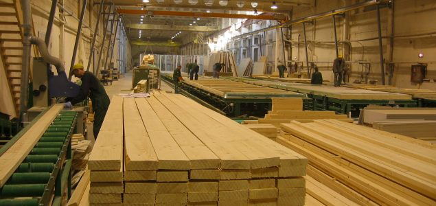

Abeh's Timber Production and Distribution
Timber products arranged in sizes, undergoing process of usage for difference purposeses.
sizes to be distributed
Timber product are distributed in different sizes either from the shop directly or be delivered to the site.
Timber products are very essential. the tools for home construction of timber gives strong structures and designs to beautifying our homes both in and out.
wall plating
wall plating is one among the big sizes used to for concret buildings, it gives the building a very strong and balanced shape. they are directly attatched to the blocks in the last caoch of every house, all raphters are placed on wall plating to give a balance before the roofing process.
2` by 6 as a wall plate
2 by 6 of any length is more flate than the 3 by 4, it is mostly used on building that has wider blocks e.g 7inch or 9inch blocks.
Example 3 by 4 by 12 or by 18the lengyh of wall plate is either by 12ft or by 18ft depending on the demand. although working with both is thesame but consume more wood in using 12ft than in 18ft.
3 by 4 as a wall plate
3inch by 4inch by 12ft or by 18ft is actually thicker than than the 2inch by 6inch by 12ft or by 18ft, this is use for blocks that are either 5inches or 6inches, but also give a higher length to the hieght of the building. wall plate in this sizes are the first wood work to be taken in doing wood work in any building process. wall plate are best in wood from the following species.
- the wood specie called small leave in layman understanding.
- the specie called mahoghani.
- Red kang wood is another good specie.
while the following species seems to be the alternative one as the case may be depending on the demand and the person handling the contract.
- the specie called Antiaries .
- another specie that can be used in place of the above is the specie called bush pearby discription.
- Another specie is the one called Agbar.
wood scantries
scantries as a terminology used in wood processing and supply, describes the dimensions of wood as suitable for use in building.
Scantries can be of difference categories such as. Raphters i.e 2 by 4 by 12, pollines i.e 2 by 3 by 12, noggines i.e 2 by 2 by 12 etc. Other dimensions can be 1 by 2 by 12, 1 by 1 by 12 and battons for decorating a building.
Wood supplied in scantries of, raphters, pollines and noggineseuismod. are of difference dimensions to give the capenters what is desired to give a balance in the building structure, they are used according to their dimensions, from biggest size to the smallest, i.e after the placing of the wall plates followed by the king post, the raphters, the pollines and the noggines respectively.
Others like the 1 by 1, 1 by 2 and battons are used inside the building after the ceilling baord have been suspended, the battons will hold them tight as well as giving it a nice look. some of these scantries from Obudu shop are shown in the figure below


wood for furniture
Timber products are very useful in our homes such that some of the species are used as furniture to decorate our homes with ophostries, center tables, dinning tables and chairs, wine bars, hangers, kitchen cabbinet, office chairs, cotton rails etc. some of these species used for furnitures are:
- TICK: tick has running lines arranged in colors
- SIDDA: sidder give a shinning surface, looking so natural.
- GMELIANA: this specie gives a lighter look but with more mobbile ability
some furniture wood like momorsobe, sidder, mahoghani, opepper, black afarra maddrid etc are export products used for other end products like books, which will always generate income for local government, state and the federal government.
The detailed explanation of this wood species are given in the next topic.
About the M.D.
the managing director Mr Jonathan Abeh is a man of high integrity and enthusiastic in all he does. He holds an N.C.E in Physics/ Integrated science, B.sc in Industrial Physice and a number of skill qualifications, that gear him to develop passion for timber business
.